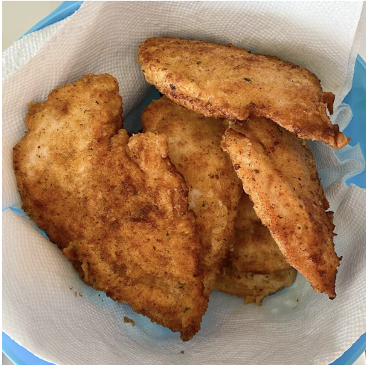

Home
Garlic Fried Chicken

Description
This actually uses my breading for Chicken Fried Steak---my husband
suggested we try it with chicken breasts, and it was delicious!
One day, I will be proficient enough in cooking to be able to cook
this without any help.
Ingredients
- 2 teaspoons garlic powder, or to taste
- 1 teaspoon ground black pepper
- 1 teaspoon salt
- 1 teaspoon paprika
- 1/2 cup seasoned bread crumbs
- 1 cup all-purpose flour
- 1/2 cup milk
- 1 egg
- 4 skinless, boneless chicken breast halves - punded thin
- 1 cup oil for frying, or as needed
Steps
-
In a shallow dish, mix together the garlic poweder, pepper salt,
paprika, bread crumbs and flour. In a separate dish, whisk
together the milk and egg.
-
Heat the oil in an electric skillet set to 350 degrees F (175
Degrees C). Dip the chicken into the egg and milk, then dredge
in the dry ingredients until evenly coated.
- Fry chicken in the hot oil.